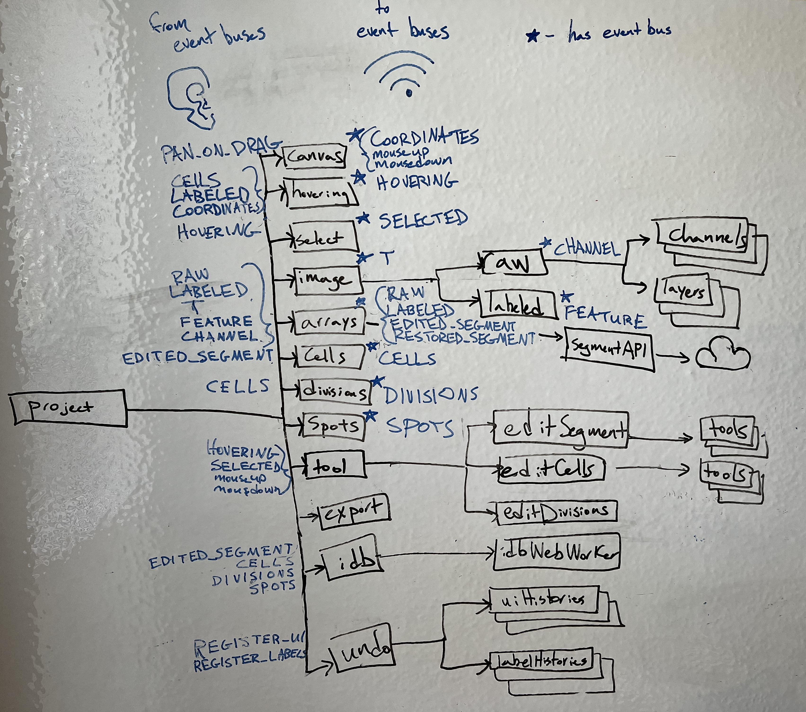

Architecture#
DeepCell Label has two subcomponents
a backend that handles data input and output and logic to edit segmentations
a frontend that shows and edits an image with its labels
See details on how to run them locally or on the cloud.
Python backend#
The backend is a Python based Flask application that
loads files into the database and bucket
accesses projects for the client
edits the segmentation
exports the project
Loading projects#
To create a DeepCell Label project, send a POST request with a form to /api/project. See the DeepCell Label zip file format for details on the form contents.
The DeepCell Label homepage uses a similar route /api/project/dropped that attaches a dragged and dropped file to the request.
Accessing projects#
The client fetches project data through /api/project/<ID>. As this route provides access to projects, the S3 bucket with project zip files can be private. The route looks up the URL for the project zip in the database, then downloads and forwards the zip file to the client.
Editing segmentation#
The client edits the segmentation image with the /api/edit route. The route uses an attached zip file containing the data to edit and responds with a zip file with the edited segmentation image and cells.
See DeepCell Label zip format for how to send data to /api/edit.
Exporting projects#
DeepCell Label has a Submit button that sends the edited labels to the /api/upload route, creates a zip, and uploads the zip to an S3 bucket.
When opening a DeepCell Lable link with download=true, the page shows a Download button instead of Submit. The button calls /api/download which responds with the zip for the client to download.
See DeepCell Label zip format for how to send data to these routes.
Client#
The client is a React based user interface with XState based state management.
React UI#
The top level component is App.js, which provides a NavBar and Footer for all pages and routing with React Router.
App.js routes between three pages:
/shows Load, a homepage that can create project from drag-and-dropped files or example files/loadingshows Loading, a page for redirecting from deepcell.org/predict that shows a loading animation or error messages/projectshows Project, a page for viewing and editing projects
State management#
The React components use hooks defined in ProjectContext.js to access and render the state.
The root level machine spawns child actors and sets up event buses for these actors to communicate with each other.
Here’s a tree diagram of the spawned state machines. The root project state machine, and the child state machine The state machines with stars have event buses that they broadcast events on. The events they broadcast are shown in blue to the right of the state machine. The events that state machines listen to from these event buses on are shown to the left.
Note that as more machines are added (including cellTypes), this diagram is getting out of date in specifics, but the basic principles and structure remains true.

UI actors#
These actors manage the interactions with the UI
canvasMachineinterprets interactions with the canvas, like
mousemove,mouseup, andmousedownbroadcasts
COORDINATESand mouse events on its event buscan switch between a panOnDrag that pans the canvas when clicking and dragging and a noPan state where the spacebar has to be held to click and drag to pan
hoveringMachinecombines the coordinates from the canvas, the labeled array from arrays, and the cell labels from cells to detemine a list of cells under the cursor
broadcasts
HOVERINGevents on its event bus when the hovering cells change
selectMachinetracks which cell is selected
updates the selected cell with
SELECT,SELECT_NEW,RESET,SELECT_PREVIOUS, andSELECT_NEXTeventsbroadcasts SELECTED events on its event bus when the selected cell changes
imageMachinemanages which time
tof a timelapse to showbroadcast
Tevents on its event bus whentchangesspawns
rawMachinemanages which channel(s) to display
broadcasts
CHANNELevents on its event busspawns an actor for each channel
spawns an actor for each layer in color mode
spawns
labeledMachinemanages which segmentation to display and how to display it
broadcasts
FEATUREevents on its event bus
editMachinemanages which tab of controls are open next to the canvas, such as display, segment, cells, divisions, or spots
for the tabs with controls to edit labels, it spawns a child actor to manage the tab that can send events to the respective labels machine to trigger an action that edits the labels, including
editSegmentMachineeditCellsMachineeditDivisionsMachineeditCellTypesMachineeach of these spawn actors for the tools it manages, and the tool actors send events to a label machine (e.g.
cellMachine) to edit the labels
Labels#
These state machines hold the labels and manage the logic that edit labels.
arraysMachinemanages the raw image arrays and the segmentation images
spawns
segmentApiMachinethat communicates with the segmentation editing API on the Flask backend
cellsMachinemanages the cells and how to edite them
edits the cells on
DELETE,SWAP,REPLACE, andNEWevents
divisionsMachinemanage the divisions and how to edit them
edits the divisions on
ADD_DAUGHTERandREMOVE_DAUGHTEReventsupdates divisions to stay in sync with cells when receiving
DELETE,SWAP,REPLACE, andNEWevents
spotsMachinemanages the spots labels
no spots editing implemented yet
cellTypesMachinemanages the cell type labels
edits cell type labels by adding and removing cell types (
ADD_CELLTYPE,REMOVE_CELLTYPE), modifying which cells are in which types (ADD_CELL,REMOVE_CELL), and any other cell type label editssupplemented by 2 additional machines:
channelExpressionMachineMakes calculations for channel expressions for each cell in the image via mean and total pixel values
Calculations are calculated and saved for use in plotting functionality (histogram, scatter, UMAP)
trainingMachineUses the tensorflow.js package to train a machine learning model on the frontend using either the channel expression calculations or some imported embeddings for each cell
The model can then be used to make predictions of cell type labels for each unlabeled cell, as well as estimate uncertainties, as we have translated the Python tensorflow implementation of SNGP (still needs to be tested more extensively)
Data management#
These state machines provide additional infrastructure to record changes to labels.
undoMachinespawns
uiHistoryMachineandlabelsHistoryMachineto save and restore statetracks how many label edits have been done, undone, and redone
see undo below for more details
idbMachinespawns
idbWebWorkerin a web worker to interact with IndexedDB off of the main thread
exportMachinesends project data to the backend to be repackaged and exported
Undo#
The undo machine keeps track of how many actions have been done, undone, or redone. It spawns a list of uiHistoryMachine to track an actor’s state when each action starts, and it spawns a list of labelHistoryMachine to track the label changes caused by the actions.
An actor can send an REGISTER_UI event to the undo machine to create a uiHistoryMachine for that actor, or send a REGISTER_LABELS event to create a labelHistoryMachine.
An actor tracked with a uiHistoryMachine must
respond with a RESTORE event that records its current state when it receives a SAVE event
restore its state when it receives RESTORE event
An actor tracked with a labelHistoryMachine must
send a SNAPSHOT event to the history machine when its labels are edited, containing the properties
edit, with a number for the action that the changes are part of
before, with an event that has the labels before the action
after, with an event that has the labels after the action
restore its labels when receiving these before and after events
A uiHistoryMachine records its actor’s state for every action, while labelHistoryMachine only records the state when it receives a snapshot from the actor.